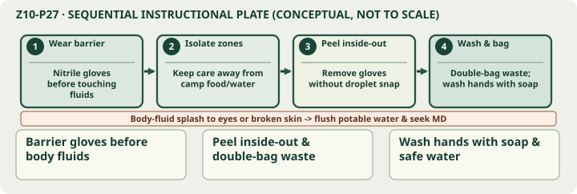

Z10-P27 · Wilderness medicine · New manuscript
Practice field caregiver hygiene and body-fluid barrier precautions
Prevent cross-contamination between wounds, fecal-oral germs, and bloodborne exposures during remote patient care.
When it applies · Every first-aid interaction, multi-day group camp care, and remote illness management.
Equipment · Disposable nitrile gloves, soap and confirmed potable water, alcohol-based hand rub (≥60% alcohol), and sealed waste bag.

Actions
- Put on clean disposable nitrile gloves (or clean plastic-bag barriers if gloves are absent) before touching blood, open wounds, vomit, or body fluids, and wash hands thoroughly before and after patient care.[F01, W29, M20]
- Remove soiled gloves carefully from the inside out without snapping droplets onto skin or eyes, seal blood- or waste-soaked items in double leak-proof bags for proper pack-out/disposal, and wash hands immediately afterward.[F01, M20, ED]
- Keep wound-care water, patient utensils, and latrine/waste zones strictly separate from group drinking water and food preparation areas.[F01, W06, W29]
Failure recognition · Handling bloody dressings bare-handed and immediately preparing group food without washing hands with soap and safe water.[F01, W29]
Verify · Confirm caregivers washed hands with soap/potable water (or hand rub when not visibly soiled) and sealed bio-waste separately from food/gear.[F01, W29]
Stop or change course · If blood or body fluids splash into a caregiver's eyes, mouth, or broken skin, flush immediately with clean potable water and seek prompt clinical post-exposure evaluation.[M18, M06, ED]
Evidence and editorial notes
- F01 · USDA / FDA / CDC · Four Steps to Food Safety (current web edition)
- Section: Clean and Separate · Conditions: Food preparation with safe water and surfaces
Support: Wash hands and separate raw animal foods and juices from ready-to-eat food.
Limitations: Requires safe water or approved hand hygiene substitutes in outages. · Conflicting evidence: None; retained for food safety pack completeness.
Editorial note: Maintains five-pack integrity. · Specialist reviewer: Food safety and public health
Primary source · checked 2026-11-24 - M06 · NIH / MedlinePlus · Wounds and Injuries (current web edition)
- Section: Minor Wound Cleaning, Protection, and Infection Red Flags · Conditions: Superficial cuts, scrapes, and abrasions with potable water available
Support: Rinse minor wounds thoroughly with clean potable water, cover with a clean sterile dressing, and monitor for worsening redness, warmth, swelling, pus, red streaks, or fever.
Limitations: Deep punctures, animal bites, retained foreign bodies, or heavily contaminated wounds require clinical evaluation and tetanus review. · Conflicting evidence: None; separates clean potable rinsing from harsh chemical wound scrubbing.
Editorial note: Anchors field wound hygiene and infection escalation cards. · Specialist reviewer: Wilderness medicine and wound care
Primary source · checked 2026-11-24 - M18 · NIH / MedlinePlus · Eye Injuries (current web edition)
- Section: Eye Injuries, Flushing, and Penetrating Trauma Limits · Conditions: Dust/chemical splash vs blunt or penetrating eye trauma
Support: Flush chemical splashes or loose surface grit gently with clean potable water or sterile saline; never rub the eye, never remove an embedded object, shield without pressure, and seek urgent eye care.
Limitations: Forcing open swollen eyelids or pulling embedded debris causes irreversible vision loss. · Conflicting evidence: None; separates surface irrigation from penetrating-eye shield protection.
Editorial note: Core eye-trauma decision boundary in Z10. · Specialist reviewer: Ophthalmology and emergency medicine
Primary source · checked 2026-11-24 - M20 · NIH / MedlinePlus · First Aid Overview (current web edition)
- Section: Lay First-Aid Scope, Kit Readiness, and Documentation · Conditions: Pre-trip kit preparation and remote patient monitoring
Support: Maintain an inspected, unexpired first-aid kit matched to your actual training, keep written patient observations (time, responsiveness, breathing, symptoms, interventions) for EMS handoff, and practice skills in certified courses.
Limitations: Carrying advanced medical instruments without clinical training adds risk rather than capability. · Conflicting evidence: None; aligns with ARC and NPS-K.
Editorial note: Anchors kit sizing, SOAP-style lay observation logs, and scope-of-practice cards. · Specialist reviewer: Wilderness EMS and clinical education
Primary source · checked 2026-11-24 - W06 · CDC · How to Create an Emergency Water Supply (current web edition)
- Section: How to store emergency water; Safe storage containers · Conditions: Potable water intended for emergency storage
Support: Prefer sealed commercial water or clean food-grade tight-closing containers. Avoid containers that held toxic chemicals.
Limitations: Container shelf durability and rotation depend on plastic/material type and storage heat. · Conflicting evidence: None; reinforces strict raw-vs-clean segregation.
Editorial note: Used to enforce labeling and dedicated raw/potable vessel separation. · Specialist reviewer: Drinking-water safety and public health
Primary source · checked 2026-11-24 - W29 · CDC · How to Make Water Safe in an Emergency (2024-09-19)
- Section: Boil > Safe Water for Infants, Wounds, and Hygiene · Conditions: Emergency hygiene, wound rinsing, and infant formula preparation under water advisories
Support: Use confirmed potable or properly boiled-and-cooled water for brushing teeth, washing produce, cleaning wounds, and mixing infant formula; avoid untreated water for food-contact utensils.
Limitations: Do-not-use advisories may also prohibit skin contact or bathing depending on contaminant. · Conflicting evidence: None; extends drinking safety to hygiene and preparation boundaries.
Editorial note: Separates potable-required tasks from non-potable utility uses. · Specialist reviewer: Public health and wilderness medicine
Primary source · checked 2026-11-24
Source lineage · CDC Safe Water and USDA/CDC Hand Hygiene; new manuscript · Classification · New manuscript.